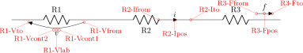
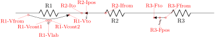
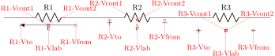
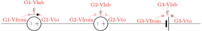

CircuiTikZ
version 1.8.6-unreleased (2026/02/10)
5 Labels, voltages and currents
You can add “decorations” to the path-style components; there are basically five types of them: labels, annotations, voltages, currents, and flows. Let’s see an example of all of them…


Long names/styles for the bipoles can be used, of course, and there is a special syntax (that works only in simple cases, and only with LaTeX — use it with caution!) if you load the package with the siunitx options:

5.1 Labels and Annotations
Since Version 0.7, beside the original label (l) option, there is a new option to place a second label, called annotation (a) at each bipole.
5.1.1 Label and annotation position
When drawing a component left-to-right, the label l is by default above the component, and the annotation a is by default below it. The position of annotations and labels can be adjusted adding the characters _ or ^ to the key.

For passive components, you can use component type=text as a shortcut for component type, l=text:
Notice though that in active component (sources of either voltage or current) the shortcut will set the voltage (v) or current (i) property.
5.1.1.1 Adjust label and annotation position. Normally the package will guess a good position for the label or annotation; if you do not like it, you can add128 (or remove, with negative values) distance using the \ctikzset keys label distance and annotation distance.
\begin{circuitikz}
\draw (0,0) to[sR, l=$R$, label distance=-4pt] (2,0)
to [sR, l=$R$] (4,0);
\end{circuitikz}
\begin{circuitikz}[american]
\ctikzset{bipoles/inductors/core distance=4pt}
\draw (0,1) to[L=$L$, name=myL] ++(2,0);
\draw[thick, double] (myL.core west) -- (myL.core east);
\draw (0,0) to[L=$L$, name=myL, label distance=2pt] ++(2,0);
\draw[thick, double] (myL.core west) -- (myL.core east);
\end{circuitikz}
5.1.2 Special symbols in labels and annotations.
When TikZ processes the options, there will be problems if the label (or annotation, voltage, or current) contains one of the characters \(=\) (equal) or \(,\) (comma) — because the parser search for those two characters to delimit the arguments, giving unexpected errors and wrong output. These two characters can be protected from the option parser using an extra set of braces.
\begin{circuitikz}
% the following will fail:
% \draw (0,0) to[R, l=$R=3$]
\draw (0,0) to[R, l={$R=3$}] (3,0);
\draw (0,0) to[R={$R=3$}] (0,3);
\draw (3,3) to[R={$R,3$}] (3,0);
% this works, but it has wrong spacing
\draw (0,3) to[R, l=$R{=}3$] (3,3);
\end{circuitikz}
Caveat: up to version 1.2.7, due to the way in which CircuiTikZ used to processes the options, even that was not sufficient, so you must protect that tokens even more, for example using an \mbox command, or redefining the characters with a TeX \def:
\begin{circuitikz}
\def\eq{=}
% the following will fail up to 1.2.7:
% \draw (0,0) to[R, l={$R=3$}] (3,0);
\draw (0,0) to[R, l=\mbox{$R=3$}] (3,0);
\draw (0,0) to[R, l=$R\eq3$] (0,3);
\draw (3,3) to[R, l=\mbox{$R,3$}] (3,0);
% this works, but it has wrong spacing
\draw (0,3) to[R, l=$R{=}3$] (3,3);
\end{circuitikz}

5.1.3 Labels and annotation orientation.
The default orientation of labels is controlled by the options smartlabels, rotatelabels and straightlabels (or the corresponding label/align keys). Here are examples to see the differences:
\begin{circuitikz}
\ctikzset{label/align = straight}
\def\DIR{0,45,90,135,180,-90,-45,-135}
\foreach \i in \DIR {
\draw (0,0) to[R=\i, *-o] (\i:2.5);
}
\end{circuitikz}
\begin{circuitikz}
\ctikzset{label/align = rotate}
\def\DIR{0,45,90,135,180,-90,-45,-135}
\foreach \i in \DIR {
\draw (0,0) to[R=\i, *-o] (\i:2.5);
}
\end{circuitikz}
\begin{circuitikz}
\ctikzset{label/align = smart}
\def\DIR{0,45,90,135,180,-90,-45,-135}
\foreach \i in \DIR {
\draw (0,0) to[R=\i, *-o] (\i:2.5);
}
\end{circuitikz}
5.1.4 Stacked (two lines) labels.
When using circuitikz in LaTeX, you can use stacked (two lines) labels. The example should be self-explanatory: the two lines are specified as l2=line1 and line2. You can use the keys l2 halign to control horizontal position (left, center, right) and l2 valign to control the vertical one (bottom, center, top). The default values for alignments are thought for vertical components (where the stacke labels are more natural), in other positions you have to force them.
Notice that you can’t use the compact <...> notation for siunitx with stacked labels. Before v1.3.6 the label was ignored, but that has been converted into an error.
Since v1.3.6 you have the same possibility with the annotation (just use a2=..., a2_=..., a2 valign and so on. Notice that the default position for stacked annotation is a2 halign=l.
The l2 and a2 will only work in LaTeX because they use a tabular environment in their implementation. For plain TeX and ConTeXt you have to use l and a and build the stack of labels externally.
\begin{circuitikz}[american]
%
% default for l2 is: l2 halign=l, l2 valign=c. DO NOT USE the <...> notation
%
\draw (0,0) to[R, l2_=$R_{CC}$ and \SI{4.7}{k\ohm}, , l2 valign=t] ++(2,0);
\draw (0,0) to[R, l2_=$R_{CC}$ and \SI{4.7}{k\ohm}, , ] ++(0,2);
\draw (0,0) to[R, l2_=$R_{CC}$ and \SI{4.7}{k\ohm}, l2 halign=c, l2 valign=b] ++(-2,0);
\draw (0,0) to[R, l2_=$R_{CC}$ and \SI{4.7}{k\ohm}, l2 halign=r, l2 valign=c] ++(0,-2);
\draw (5,0) to[R, l2^=$R_{CC}$ and \SI{4.7}{k\ohm}, l2 halign=c, l2 valign=b] ++(2,0);
\draw (5,0) to[R, l2^=$R_{CC}$ and \SI{4.7}{k\ohm}, l2 halign=c, ] ++(0,2);
\draw (5,0) to[R, l2^=$R_{CC}$ and \SI{4.7}{k\ohm}, , l2 valign=t] ++(-2,0);
\draw (5,0) to[R, l2^=$R_{CC}$ and \SI{4.7}{k\ohm}, l2 halign=c, l2 valign=t] ++(0,-2);
\draw (10,2) to[R, l2={A=B} and X, a2={C=D} and Y] ++(0,-4);
\end{circuitikz}
For extra options about labels and annotations, please refer to section 5.6
5.2 Currents and voltages
The default direction/sign for currents and voltages in the components is, unfortunately, not standard, and can change across country and sometime across different authors. This unfortunate situation created a bit of confusion in circuitikz across the versions, with several incompatible changes starting from version 0.5. From version 0.9.0 onward, the maintainers agreed a new policy for the directions of bipoles’ voltages and currents, depending on 4 different possible options:
-
• oldvoltagedirection, or the key style voltage dir=old: Use old way of voltage direction having a difference between european and american direction, with wrong default labeling for batteries (it was the default before version 0.5);
-
• nooldvoltagedirection, or the key style voltage dir=noold: The standard from version 0.5 onward, utilize the (German?) standard of voltage arrows in the direction of electric fields (without fixing batteries);
-
• RPvoltages (meaning Rising Potential voltages), or the key style voltage dir=RP: the arrow is in direction of rising potential, like in oldvoltagedirection, but batteries and current sources are fixed so that they follow the passive/active standard: the default direction of v and i are chosen so that, when both values are positive:
-
– in passive component, the element is dissipating power;
-
– in active components (generators), the element is generating power.
-
-
• EFvoltages (meaning Electric Field voltages), or the key style voltage dir=EF: the arrow is in the direction of the electric field, like in nooldvoltagedirection, but batteries are fixed;
Notice that the four styles are designed to be used at the environment level: that is, you should use them at the start of your environment as in \begin{circuitikz}[voltage dir=old] ... and not as a key for single components, in which case the behavior is not guaranteed.
The standard direction of currents, flows and voltages are changed by these options; notice that the default drops in case of passive and active elements is normally different. Take care that in the case of noold and EFvoltages also the currents can switch directions. It is much easier to understand the several behaviors by looking at the following examples, that have been generated by the code:
\foreach\element in {R, C, D, battery2, V, I, sV, cV, cI}{%
\noindent\ttfamily
\begin{tabular}{p{2cm}}
\element \\ american \\[15pt]
\element \\ european \\
\end{tabular}
\foreach\mode in {old, noold, RP, EF} {
\begin{tabular}{@{}l@{}}
\multicolumn{1}{c}{voltage dir} \\
\multicolumn{1}{c}{dir=\mode} \\[4pt]
\begin{tikzpicture}[
american, voltage dir=\mode,
]
\draw (0,0) to[\element, *-o, v=$v_1$, i=$i_1$, ] (2.5,0);
\end{tikzpicture}\\
\begin{tikzpicture}[
european, voltage dir=\mode,
]
\draw (0,0) to[\element, *-o, v=$v_1$, i=$i_1$, ] (2.5,0);
\end{tikzpicture}
\end{tabular}
\medskip
}
\par
}
|
R |
|
american |
|
R |
|
european |
| voltage dir |
| dir=old |
 |
| voltage dir |
| dir=noold |
 |
| voltage dir |
| dir=RP |
 |
| voltage dir |
| dir=EF |
 |
 |
|
C |
|
american |
|
C |
|
european |
| voltage dir |
| dir=old |
 |
| voltage dir |
| dir=noold |
| voltage dir |
| dir=RP |
 |
 |
| voltage dir |
| dir=EF |
 |
 |
|
D |
|
american |
|
D |
|
european |
| voltage dir |
| dir=old |
 |
 |
| voltage dir |
| dir=noold |
 |
 |
| voltage dir |
| dir=RP |
| voltage dir |
| dir=EF |
 |
|
battery2 |
|
american |
|
battery2 |
|
european |
| voltage dir |
| dir=old |
 |
| voltage dir |
| dir=noold |
 |
| voltage dir |
| dir=RP |
| voltage dir |
| dir=EF |
|
V |
|
american |
|
V |
|
european |
| voltage dir |
| dir=old |
| voltage dir |
| dir=noold |
 |
 |
| voltage dir |
| dir=RP |
 |
 |
| voltage dir |
| dir=EF |
 |
|
I |
|
american |
|
I |
|
european |
| voltage dir |
| dir=old |
 |
| voltage dir |
| dir=noold |
 |
 |
| voltage dir |
| dir=RP |
| voltage dir |
| dir=EF |
 |
|
sV |
|
american |
|
sV |
|
european |
| voltage dir |
| dir=old |
 |
| voltage dir |
| dir=noold |
| voltage dir |
| dir=RP |
| voltage dir |
| dir=EF |
 |
|
cV |
|
american |
|
cV |
|
european |
| voltage dir |
| dir=old |
 |
 |
| voltage dir |
| dir=noold |
 |
 |
| voltage dir |
| dir=RP |
| voltage dir |
| dir=EF |
 |
|
cI |
|
american |
|
cI |
|
european |
| voltage dir |
| dir=old |
 |
| voltage dir |
| dir=noold |
| voltage dir |
| dir=RP |
 |
| voltage dir |
| dir=EF |
 |
 |
Obviously, you normally use just one between current and flows, but anyway you can change the direction of the voltages, currents and flows using the complete keys i_>, i^<, i>_, i>^, as shown in the following examples.
This manual has been typeset with the option RPvoltages.
5.2.1 Common properties of voltages and currents
Currents, voltages and flows (see later) are positioned along, or across, the part of the wires that connect the inner component to the rest of the circuit. So, changing the length of the connection (the coordinates that embrace the to[...] command) will change the position of the components.
\begin{circuitikz}
\draw (-1,1) to[R, v=$v$, i=$i$, f>^=$f$] (1,1);
\draw (-2,0) to[R, v=$v$, i=$i$, f>^=$f$] (2,0);
\end{circuitikz}
However, you can override the properties voltage/distance from node (default 0.5: how distant from the initial and final points of the path the arrow starts and ends or the plus and minus symbols are drawn) and voltage/bump b (how high the bump of the arrow is — how curved it is, default 1.5), and also voltage/european label distance (how distant from the normal position the voltage label will be, default 1.4) on a per-component basis, in order to fine-tune the voltages:
\tikz \draw (0,0) to[R, v=1<\volt>] (2,0); \par
\ctikzset{voltage/distance from node=.1}
\ctikzset{voltage/bump b=2.5}
\tikz \draw (0,0) to[R, v=1<\volt>] (2,0);

You can also use a global ctikzset on the key voltage/distance from node (and similar) that will act as a default value. Notice however that the specific component value overrides the global one, and several components have pre-defined overrides, so they will ignore the default value. The components that have out of the box predefined overrides for distance from node are generic, ageneric, fullgeneric and memristor (set to 0.4), and the ones that have it for bump b are generic, ageneric, fullgeneric, memristor, tline, varistor, photoresistor, thermistor, thermistorntc, thermistorptc, ccapacitor, emptyzzdiode, fullzzdiode, emptythyristor, fullthyristor, emptytriac and fulltriac„ with several values (you can look at them in the file pgfcirc.defines.tex).129
Notice also that normally distance from node is a relative displacement, computed on the node-component wire. So that this will put the start and stop point \(1/4\) of the way between node and component:
\begin{circuitikz}
\ctikzset{voltage/distance from node=0.25}
\draw (0, 2) to[D, v=$v_1$] ++(4,0);
\draw (0, 1) to[D, v=$v_1$] ++(3,0);
\draw (0, 0) to[D, v=$v_1$] ++(2,0);
\end{circuitikz}
The value of distance from node can also be an absolute distance; in that case is measured from the start of the connection toward the component on the left (and symmetrically on the right), so this will put the start and end point to 0.25 cm from the start of the node:
\begin{circuitikz}
\ctikzset{voltage/distance from node=0.25cm}
\draw (0, 2) to[D, v=$v_1$] ++(4,0);
\draw (0, 1) to[D, v=$v_1$] ++(3,0);
\draw (0, 0) to[D, v=$v_1$] ++(2,0);
\end{circuitikz}

There is currently no way to specify the position at a fixed distance from the component (as opposed as from the node).
The same concept as distance from node applies to the key current/distance for the position of the current’s arrow (and to flow/distance for the flow arrow position):
\tikz \draw (0,0) to[C, i=$\imath$] (2,0); \par
\ctikzset{current/distance = .2}
\tikz \draw (0,0) to[C, i=$\imath$] (2,0);
If you want to change those parameters by defining a component-specific key you have to use the internal name of the component (in the component list, is the nodename without the terminal “shape” part):
\tikz \draw (0,0) to[R, v=1<\volt>] (1.5,0)
to[C, v=2<\volt>] (3,0); \par
\ctikzset{bipoles/capacitor/voltage/distance from node/.initial=.7}
\tikz \draw (0,0) to[R, v=1<\volt>] (1.5,0)
to[C, v=2<\volt>] (3,0); \par

Note the .initial; you have to create such key the first time you use it. These kinds of adjustments are not guaranteed to work in future upgrades, though; if you have to create a key you are somehow touching the internal structure of the package; it’s much safer to create a style.
One common request is to change the style of the arrows (both head and line) of these elements. Voltages, currents and flows are part of the same path of the component, so this is not possible in simple way; you have to draw your own with TikZ commands using the facilities explained in section 5.8.
129 To achieve consistent results of voltage/distance from node=0 refer to this solution by Jakob Leide on tex.stackexchange.com.
5.2.2 Special treatment for generators
The “active” elements (sources and batteries, mainly) are treated differently from passive elements, in the sense that the default current and voltage direction and position could be different130 following the chosen global voltage direction strategy (see section 5.2). If they change or not depend on both the element and the chosen voltage dir option.
\begin{tikzpicture}[]
\draw (0,0) to[sV, v=$V_s$] ++(2,0)
to[battery, v=$V_B$] ++(2,0)
to[R, v=$V_R$] ++(2,0);
\end{tikzpicture}
The consistency between symbols drawings and the default voltage and current directions are designed to work well when this default is enabled. If you want, though, you can override this behavior by “switching off” the source status of the component by setting the property bipole/is voltage to false:
\begin{tikzpicture}[]
\draw (0,0) to[sV, bipole/is voltage=false,
v=$V_s$] ++(2,0)
to[battery, bipole/is voltage=false,
v=$V_B$] ++(2,0)
to[R, v=$V_R$] ++(2,0);
\end{tikzpicture}
When you do this, be careful that (as you can see) the direction of the plain v=... option will change (please notice that this does not mean that it is incorrect, given that the voltage and current direction are arbitrary; in the case above, if the battery is a 3 V one, \(V_B=\SI {-3}{V}\) with the RPvoltages conventions).
Also, notice that there is an ordering problem in the to[...] options: you have to switch the is voltage property off before setting the voltage, otherwise you will have a mix of the source-type and passive positioning:
\begin{tikzpicture}[]
% correct way
\draw (0,0) to[sV, bipole/is voltage=false, v=$V_s$] ++(2,0)
% wrong way, setting voltage before changing type
to[sV=$V_B$ , bipole/is voltage=false, ] ++(2,0);
\end{tikzpicture}
In the first to[] command, the voltage is set before changing the type (assigning a value to the name of the element is understood as a v=... command for voltage sources).
A similar switch is present for current generators, called bipoles/is current, acting in a very similar way.
If you would prefer to switch to the is voltage=false, is current=false behavior by default, you can (since v1.4.4131) by setting the option bipole/override source vif to true. This is highly experimental, so use with care.
\begin{tikzpicture}[]
\draw (0,0) to [battery=vb] ++(2,0)
to[sV=sV] ++(2,0) to[R, v=vR] ++(2,0);
\ctikzset{bipole/override source vif=true}
\draw (0,-2) to [battery=vb] ++(2,0)
to[sV=sV] ++(2,0) to[R, v=vR] ++(2,0);
\end{tikzpicture}
Notice that the option override source vif is “stronger” than the normal is voltage; so to locally re-set the behavior for just one source, you need to disable that before using a voltage designator.
\begin{tikzpicture}[american]
% dangerous option ahead: USE WITH CARE
\ctikzset{bipole/override source vif=true}
% ugly output, you should really use V>=va
\draw (0,6) to [V=va] ++(2,0);
% not working!
\draw (0,4) to [V=va, bipole/override source vif=false] ++(2,0);
% ok, this one is working --- you need both settings!
\draw (0,2) to [V,
bipole/override source vif=false,
bipole/is voltage=true,
v=va] ++(2,0);
\end{tikzpicture}
Clearly, if you find yourself using the last component often, it is better to define a style, which will save you a lot of typing and help readability:
\tikzset{myV/.style={V, bipole/override source vif=false,
bipole/is voltage=true, v={#1}}}%
\begin{tikzpicture}[american]
% dangerous option ahead: USE WITH CARE
\ctikzset{bipole/override source vif=true}
\draw (0,0) to [V>=va] ++(2,0);
\draw (0,-2) to[myV=vb] ++(2,0);
\end{tikzpicture}
On the other way around, you could use styles to set is voltage=false only on the components you use and without using the global switch — which is the recommended way of doing it.
130 This, in hindsight, has been a bad feature — and I’m partly responsible for it. But removing it would create too small variations in circuits, easily to go unnoticed, so it stays: nobody wants wrong circuits just by recompiling.
131 Suggested by user @judober on GitHub.
5.3 Currents
Inline (along the wire) currents are selected with i_>, i^<, i>_, i>^, and various combinations; the default position and direction is obtained with the simple key i=....
Basically, ^ and _ control if the label is above or below the line (above and below do depend on the direction of the component path), and < and > the direction of the arrow; swapping them (from for example from i^> to i>^) will switch the side of the component where the symbol is drawn. See the following examples:

Also notice that the direction of the path is important:
\begin{circuitikz}
\draw (2,1) to[R, i<=$i_1$] (0,1);
\draw (0,0) to[R, i<=$i_1$] (2,0);
\end{circuitikz}
Default directions can change if the component is active or passive,132 following the chosen global voltage direction strategy (see section 5.2).

Current generators with the direct label (the one obtained by, for example, I = something) will treat it as a current:

If you use the option americancurrent or using the style american currents you can change the style of current generators.
132 This is better explained in section 5.2.2
5.4 Flows
As an alternative for the current arrows, you can also use the following “flows”. They can also be used to indicate thermal or power flows. The syntax is pretty the same as for currents.

5.5 Voltages
See the introduction at Currents and Voltages (section 5.2, page (page for section 5.2)) for the default direction of the voltage and currents.
Voltages come in four different styles: European (with curved or straight arrows) and American (with signs that can stay near the wire or raised at the label level).
Direction and position of the symbols are controlled in the same way as for the currents (see section 5.3) with the _^<> symbols.
5.5.1 European style
The default, with curved arrows. Use option europeanvoltage or style european voltages, or setting (even locally) voltage=european.

The default direction for active elements can change, depending on the global voltage dir setting, so be careful.
Moreover, for historical reasons, voltage generators have differently looking arrows (they are straight even in curved European style).

You can change this last thing by forcing “off” the status of “voltage generator” of the component; but now the normal (passive) rule will apply, so, again, be careful and read section 5.2.2.
\begin{circuitikz}
\draw (0,0) to[battery, bipole/is voltage=false,
v>=$u_1$,] (2,0);
\end{circuitikz}
As for the currents, the direct label of voltage sources is passed as a voltage:
The following results from using the option americanvoltage or the style american voltages.
5.5.2 Straight European style
Using straight arrows. Use option straightvoltages or style straight voltages, or setting (even locally) voltage=straight.
Again, voltage generators are treated differently:
And you can override that with bipole/is voltage keeping into account that the default direction will be the one of passive components (see 5.2.2):
\begin{circuitikz}[straight voltages]
\draw (0,0) to[V, bipole/is voltage=false,
v=10V, i_=$i_1$] (3,0);
\end{circuitikz}
5.5.3 American style
Use option americanvoltage or set american voltages or use the option voltage=american.
5.5.4 Raised American style
Since version 1.2.1, “raised” American voltages are available; to use them, set the style raised voltages or use the option voltage=raised. This is a version of the American-style voltage where the signs are raised to the level of the label. The label is centered between the two signs, and the position of the signs is calculated by supposing that the label itself will be pretty simple; if you have very big labels you will need to adjust the position with voltage shift and/or the voltage/distance from node properties (see section 5.2.1).

\begin{circuitikz}[american]
\ctikzset{voltage=raised}
\draw (0,0) to[I=1A, v_=$u_1$] (2,0);
\end{circuitikz}
5.5.5 Voltage position
It is possible to move the arrows and the plus or minus signs away from the component with the key voltages shift (default value is 0, which gives the standard position):
\begin{circuitikz}[]
\draw (0,0) to[R, v=$v_1$, i=$i_1$] (2,0);
\draw (0,-1) to[R, v=$v_1$, i=$i_1$,
voltage shift=0.5] (2,-1);
\draw (0,-2) to[R, v=$v_1$, i=$i_1$,
voltage shift=1.0] (2,-2);
\end{circuitikz}
\begin{circuitikz}[american voltages, voltage shift=0.5]
\draw (0,0) to[R, v=$v_1$, i=$i_1$] (2,0);
\end{circuitikz}
Negative values do work as expected:
\begin{circuitikz}[raised voltages]
\draw (0,1.5) to[R, v^=$v_1$, i=$i_1$] ++(2,0);
\draw (0,0) to[R, v^=$v_1$, i_=$i_1$,
voltage shift=-1.0] ++(2,0);
\end{circuitikz}
Unfortunately133 the amount of shift given by voltage shift is not always the same between sources and passive bipoles, especially if the sizes of the component is very different from the default. Although this qualifies as a bug, and should be fixed in a more comprehensive way, a workaround is available with the key voltage shift sources adjust (default: 0.5). A smaller value is better for smaller components, as you can see in the example below.
\newcommand{\example}[2][]{\draw[#1] (#2)
to [V_=$U$] ++(0, -1) (#2) ++(2,0)
to [R,v=$U_R$] ++(0,-1);
}
\ctikzset{resistors/scale=0.55,inductors/scale=0.55,
capacitors/scale=0.6,sources/scale=.8}
\begin{circuitikz}[circuitikz/voltage=straight,
voltage dir=EF]
\example{0,4}
\ctikzset{voltage shift=2}
\example[color=red]{0,2}
\ctikzset{voltage shift sources adjust=0.2}
\example[color=blue]{0,0}
\end{circuitikz}
You can fine-tune the position of the + and - symbols and the label in independent way using voltage/shift (default 0.0 for the former and voltage/american label distance (the distance of the label from the lines of the symbols, default 1.4) for the latter.
\begin{circuitikz}[american voltages]
\draw (0,1) to[R, v=$v_1$, i=$i_1$] ++(2,0);
% normally 1.4, make it tighter
\ctikzset{voltage/american label distance=0.5}
\draw (0,0) to[R, v=$v_1$, i=$i_1$] ++(2,0);
\end{circuitikz}
Notes that american voltage also affects batteries.
\begin{circuitikz}[voltage shift=0.5]
\draw (0,0) to[battery,l_=1V, v=$u_1$, i=$i_1$] (2,0);
\end{circuitikz}
\begin{circuitikz}[american voltages, voltage shift=0.5]
\draw (0,0) to[battery,l_=1V, v=$u_1$, i=$i_1$] (2,0);
\end{circuitikz}
Additionally, the open component is treated differently; the voltage is placed in the middle of the open space134:
\begin{circuitikz}[american voltages]
\draw (0,1.5) -- ++(0.5,0)
to[open, v=$v_o$, o-o] ++(2,0) -- ++(0.5,0);
\draw (0,0) -- ++(0.5,0)
to[open, v=$v_o$, voltage=straight, *-*] ++(2,0)
-- ++(0.5,0);
\end{circuitikz}

If you want or need to maintain the old behavior for open voltage, you can set the key open voltage position to legacy (the default is the new behavior, which corresponds to the value center).
5.5.6 American voltages customization
Since 0.9.0, you can change the font135 used by the american voltages style, by setting to something different from nothing the key voltage/american font (default: nothing, using the current font) style:
\begin{circuitikz}[american]
\begin{scope}
\ctikzset{voltage/american font=\tiny\boldmath}
\draw (0,0) to[R,v=$V_S$] ++(2,0);
\end{scope}
\draw (0,-2) to[R,v=$V_S$] ++(2,0);
\end{circuitikz}
Also, if you want to change the symbols (sometimes just the \(+\) sign is drawn, for example, or for highlighting something), using the keys voltage/american plus and voltage/american minus (default $+$ and $\vphantom{+}-$).
Notice that the definition of the minus sign is not simply $-$ because in most font (but not Computer Modern!) the size of the bounding box for the mathematical plus or minus are different. The \vphantom forces the vertical size of the minus sign to be the same as the plus sign.136
\begin{circuitikz}[american]
\ctikzset{voltage/american font=\scriptsize\boldmath}
\ctikzset{voltage/american plus=\textcolor{red}{$\oplus$}}
\ctikzset{voltage/american minus=\textcolor{blue}{$\ominus$}}
\draw (0,0) to[R,v_>=$V_S$] ++(2,0);
\draw (0,-2) to[R,v_<=$V_S$] ++(2,0);
\end{circuitikz}
This could be especially useful if you define a style, to use like this:
\tikzset{red plus/.style={
circuitikz/voltage/american plus=\textcolor{red}{$+$},
}}
\begin{circuitikz}[american]
\draw (0,0) to[R,v_>=$V_S$, red plus] ++(2,0);
\draw (0,-2) to[R,v_<=$V_S$] ++(2,0);
\end{circuitikz}
135 There was a bug before, noticed by the user dzereb on tex.stackexchange.com which made the symbols using different fonts in a basically random way. In the same page, user campa found the problem. Thanks!
136 Changed in v1.6.3, you can look at this issue on GitHub for more details.
5.5.7 Combining different styles
Due to an historical hiccup, you need to be careful if you want to mix styles, like for example having american styled components and straight voltages (which are basically european style, at least in CircuiTikZ). The problem is that the order of style parameters can change the output137 as you can see in the following example, where in the red case the voltage generator shape reverted to the european one.
\begin{circuitikz}[straight voltages, american]
\draw (0,0) to [V, v=$V_P$] ++(0,3);
\draw (1,0) to [R, v=$V_P$] ++(0,3);
\end{circuitikz}\color{red}%
\begin{circuitikz}[american, straight voltages]
\draw (0,0) to [V, v=$V_P$] ++(0,3);
\draw (1,0) to [R, v=$V_P$] ++(0,3);
\end{circuitikz}
This is arguably a bug, but fixing it (separating the voltage generator shapes from the voltage style) would break havoc with older circuits, so this will not be fixed for now.
137 thanks to Stack Exchange user Mads P Olesen for noticing.
5.6 Changing the style of labels, voltages, and other text ornaments
Since version 0.9.5, it is possible to change the style of bipole text ornaments (labels, annotations, voltages etc) by using the appropriate styles or keys. The basic style applied to the text is defined in the /tikz/circuitikz key directory and applied to every node that contains the text; you can also change them locally by using the tikz direct keys in local scopes.
For example, you can make all annotations small by using:
\ctikzset{bipole annotation style/.style={font=\small}}
And/or change (override) the setting in one specific bipole using:
...to[bipole annotation style={color=red}, R, a={Red note}]...
where the annotation will be in normal font (it has been reset!) and red, or append to the style:
...to[bipole annotation append style={color=red}, R, a={Red small note}]...
Caveat: you have to put the style changing key at the start of the to arguments to have any effect138.
The available styles and commands are bipole label style, bipole annotation style, bipole voltage style, bipole current style, and bipole flow style. The following example shows a bit of everything.
\begin{circuitikz}[american]
\ctikzset{bipole annotation style/.style={font=\tiny}}
\ctikzset{bipole current style/.style={font=\small\sffamily}}
\draw (0,0) to [bipole annotation append style={fill=yellow}, R=L1, a=A1] ++(3,0)
to [bipole label style={fill=cyan}, R, l2_=L2 and 2L, a^=A2] ++(3,0);
\draw (7,0) to [bipole voltage style={color=blue},
bipole flow style={fill=green, outer sep=5pt},
R=R1, v=V1, i=I1, f>^=F1] ++(3,0)
to [bipole current append style={color=red}, R, v<=V2, i^=I2, f>^=F2] ++(3,0);
\end{circuitikz}
5.7 Accessing labels text nodes
Since 0.9.5, you can access all the labels nodes139 using special node names. So, if you use name to give a name to the bipole node, you can also access the following nodes: namelabel (notice: no space nor any other symbol between name and label!), nameannotation, namevoltage, namecurrent and nameflow. Notice that the node names are available only if the bipole has an anchor or an annotation, of course.
\newcommand{\marknode}[2][45]{%
\node[circle, draw, red, inner sep=1pt,
pin={[red, font=\tiny]#1:#2}] at (#2.center) {};
}
\begin{circuitikz}[ american]
\draw (0,0) to [R=L1, a=A1, name=L1] ++(3,0)
to [R, l2_=L2 and 2L, a^=A2, name=L2] ++(3,0);
\marknode{L1} \marknode{L1label} \marknode[0]{L1annotation}
\marknode{L2} \marknode[0]{L2label} \marknode{L2annotation}
\draw[blue] (L2label.south west) rectangle (L2label.north east);
\draw (6.1,0) to [R=R1, v=V1, i=I1, f>^=F1, name=R1] ++(3,0)
to [R, v<=V2, i^=I2, f>^=F2, name=R2] ++(3,0);
\marknode[0]{R1voltage} \marknode[0]{R2voltage} \marknode[90]{R1current}
\marknode[90]{R2current} \marknode{R1flow} \marknode{R2flow}
\end{circuitikz}
If you want to have more access to the label positioning algorithm, since 1.2.5 you can access the label rotation using the command \ctikzgetdirection{nodename} (where node name is for example L1label or L2annotation), and the anchor used for positioning the node as \ctikzgetanchor{component label}{type}, where component label is, for example, L1 and type is either label or annotation (notice that the syntax is slightly different, for implementation reasons). Those values are available only if the dipole declares a l or a keys; if you want them without any label you need to declare a blank one (like for example l=~). The following example gives an idea of the values of those macros for the three types of label positioning strategies.
\newcommand{\marklabann}[3][45]{% [angle] {node label} {type: label or annotation}
\node[circle, draw, blue, inner sep=1pt,
pin={[draw, blue, font=\tiny, align=left]#1:{#2 \\ dir: \ctikzgetdirection{#2#3} \\
anchor: \ctikzgetanchor{#2}{#3}}}] at (#2#3.\ctikzgetanchor{#2}{#3}) {};}
\begin{tikzpicture}[scale=0.95, transform shape]
\foreach \style/\xdelta in {straight/0, smart/5, rotate/10} {
\begin{scope}[xshift=\xdelta cm]
\ctikzset{label/align = \style}
\draw (0,0) node[above right, rotate=45]{\style}
to[L, o-, l=$L_{ab}$, v, name=L1, a=a] ++(3,3)
to[ceV, -*, v, name=V1, l2_=L1 and L2, a^=A] ++(0,-3);
\marklabann[135]{L1}{label}
\marklabann[-90]{L1}{annotation}
\marklabann[90]{V1}{label}
\marklabann[-90]{V1}{annotation}
\end{scope}}
\end{tikzpicture}
5.8 Advanced voltages, currents and flows
Since version 1.2.1140, it is possible to access the anchors of the “ornaments” — voltage, current and flows, together with some additional information that makes it possible to personalize them. Normally, voltages and flow and currents are drawn into the path of the bipoles, so that it is not possible, for example, to change the line type or color of the arrows, or the type of arrows141. Access to the anchors allows you to do all these things, and more.
For example, you can do something like this:
\begin{circuitikz}[]
\draw (0,1) to[R, v=$v$] ++(3,0);
\draw (0,0) to[R, v, name=R, voltage/bump b=3] ++(3,0);
\draw [thin, red, -{Stealth[width=8pt]}, ]
(R-Vfrom) .. controls (R-Vcont1) and (R-Vcont2).. (R-Vto)
node [black, pos=0.5, fill=white]{v};
\end{circuitikz}
Or, for example, to have a different voltage style; normally you would define a macro (see 5.5.6 to understand the \vphantom).
\begin{circuitikz}[voltage shift=0.5]
\def\eurVPM#1#2{% node, label
\draw [thin, -{Stealth[width=8pt]}, shorten >=5pt,
shorten <=5pt] (#1-Vfrom) node[font=\tiny]{$\vphantom{+}-$}
.. controls (#1-Vcont1) and (#1-Vcont2)..
(#1-Vto) node[font=\tiny]{$+$}
node[pos=0.5,anchor=\ctikzgetanchor{#1}{Vlab}]{#2};}
\draw (0,0) to[R=R1, name=R1, v, i=$i$] ++(3,0)
to[R, l_=R2, v^, name=R2] ++(0,-3);
\eurVPM{R1}{$v_1$} \eurVPM{R2}{$v_2$}
\end{circuitikz}
140 some options have been added in v1.4.1
141 in regular voltages, the arrows are not real TikZ arrows, but the auxiliary arrow shapes of CircuiTikZ
5.8.1 Using standard label with custom symbols
Since v1.4.1 you can also keep the voltage, current and flow labels and suppress the output of the symbols (arrows or plus/minus depending on the style) with the keys no v symbols, no i symbols, no f symbols (there are also the corresponding v symbols, i symbols and f symbols in case you want to switch the behavior off/on globally). This for example simplify an often requested feature, like having all the current in one color and the voltages in another one, which is not possible natively because the arrows are part of the same path. One possible implementation of that is the following one:
\newcommand{\iarronly}[1]{% name
\node [currarrow, color=red, anchor=center,
rotate=\ctikzgetdirection{#1-Iarrow}] at (#1-Ipos) {};
}
\newcommand{\varronly}[1]{% name
\draw [color=blue] (#1-Vfrom) .. controls (#1-Vcont1)
and (#1-Vcont2).. (#1-Vto) node [currarrow,
sloped, anchor=tip, allow upside down,pos=1]{};
}
\begin{circuitikz}[]
\ctikzset{!vi/.style={no v symbols, no i symbols}}
\ctikzset{bipole voltage style/.style={color=blue},
bipole current style/.style={color=red}}
\draw (120:6) to[R, *-, name=R, v^=$v_R$, !vi]
(120:3) to[short, i=$i_R$, name=SR, !vi] (0,0);
\draw (180:4) to[L, o-, l=$L$, name=L2, v=$v_L$, !vi]
(180:2) to[V, -*, name=V2, v_=$v_2$, !vi] (0:0);
\iarronly{SR}\varronly{R}\varronly{L2}\varronly{V2}
\end{circuitikz}
5.8.2 Activating the anchors
You will have access to the anchors for voltages, currents and flows when, in the bipole, you have a v, i, f specification (one or more of them). If you have a name key, to give the bipole a name, they will be easily accessible. Without a name key, a temporary name is generated, to be used by the “automatic v-i-f” mechanism (see 5.8.5). Otherwise, the anchors and the associated functions are not defined. To suppress the normal output of the v, i, f keys, you can use such keys without any argument, like in the previous example; notice that the _ and ^ modifiers work as expected.
The following line of resistors has been drawn with the following commands; it is used to show the name of the available anchors.
\draw (0,0) to[R=R1, v=$v$, name=R1] ++(4,0)
to[R, l_=R2, i=$i$, name=R2] ++(4,0)
to[R=R3, f=$f$, name=R3] ++(4,0);

The meaning of the anchors is the following:
-
• Vfrom and Vto are the main points where the voltage information is given: start and end point of the arrow, or position of the \(+\) or \(-\) sign. This is the same for the Ffrom or Fto anchors for flows; for inline currents, the corresponding Ifrom and Ito mark the wire segment where the arrowhead is positioned (at the specified current/distance fraction. The direction of the arrow is available using the auxiliary macro \ctikzgetdirection (see below).
-
• Vcont1 and Vcont2 are the control points for the curved arrow (see the examples above); in the case of straight arrows or american-style voltages, they are set at the midpoint between Vfrom and Vto.
-
• Vlab is where the text label for the voltage is normally positioned. The anchor used for such label is available using the auxiliary macro \ctikzgetanchor (see below). Consider the default inner sep=2pt of voltage label nodes.
-
• Ipos and Fpos are the position for the arrowhead or the small flow arrow (which is a currarrow or flowarrow node normally) is positioned, respectively. The label is then added to the correct side of it using the anchor available via \ctikzgetanchor (see below, 5.8.3). In this case, the exact position of the label is not available if you do not position the element, for this there is no Flab or Ilab coordinate; you have to use the Fpos and Ipos coordinate with the corresponding Ilab and Flab anchors.
Changing the options of the elements will change the anchors accordingly:
\ctikzset{current/distance=0.2}
\draw (0,0) to[R=R1, v>=$v$, name=R1] ++(4,0)
to[R, l_=R2, i<_=$i$, name=R2] ++(4,0)
to[R, l_=R3, f<_=$f$, name=R3] ++(4,0);

Obviously, the anchors follow the voltage style you choose:
\draw (0,0) to[R=R1, v=$v$, name=R1, voltage=straight] ++(4,0)
to[R=R2, v=$v$, name=R2, voltage=american] ++(4,0)
to[R=R3, v=$v$, name=R3, voltage=raised] ++(4,0);

Notice the position of the control points, as well as the fact that the anchor available with \ctikzgetanchor is applied to Vfrom and Vto symbols, too.
Finally, as ever, generators are treated differently, but you have all your anchors too.
\ctikzset{american}
\draw (0,0) to[V=$v$, name=G1, voltage=european] ++(4,0)
to[V=$v$, v=$v$, name=G2, voltage=american] ++(4,0)
to[battery2, v=$v$, name=G3, voltage=raised] ++(4,0);

5.8.3 Auxiliary information
When the anchors are activated, there are additional macros that you can use:
-
• \ctikzgetanchor{
}{ }: name is the name of the bipole, and anchor can be Vlab, Flab or Ilab. This macro expands to the normal anchor position (something like north, south west). Notice that if you have not activated the corresponding anchor, the content of this macro is not specified. It could be equivalent to \relax (basically, empty) or contains the anchor of a bipole with the same name from another drawing — it’s a global macro like the coordinates. -
• \ctikzgetdirection{
}: a number which is the direction of the named bipole. -
• \ctikzgetdirection{
-Iarrow}: a number which is the direction of the current arrow requested for the named bipole; using -Farrow you get the same information for flow arrows.
For example, you could like the voltage label oriented with the bipole:
\begin{circuitikz}[]
\def\myvv#1#2{%
\draw [thin, blue, ->,]
(#1-Vfrom) .. controls (#1-Vcont1) and (#1-Vcont2).. (#1-Vto)
node [pos=0.5, below,
rotate=\ctikzgetdirection{#1}] at (#1-Vlab) {#2}; }
\draw (0,0) to[R, v, name=A] ++(3,0);
\draw (0,0) to[R, v, name=B] ++(3,3);
\myvv{A}{$v_A$}\myvv{B}{$v_B$}
\end{circuitikz}
Or you could use the anchor to substitute the flow with a fancy one and still position the label automatically; suppose you have the following definition in your preamble (see TikZ manual, “Path decorations”):
% requires \usetikzlibrary{decorations, decorations.pathmorphing}
\tikzset{%
lray/.style={decorate, decoration={
snake, amplitude=2pt,pre length=1pt,post length=2pt, segment length=5pt,},
-Triangle,
}}
You can then define a kind of “power flow” style:
\begin{circuitikz}[]
\newcommand\myff[3][blue]{% [opt: color] node label
\draw [lray, #1, ] (#2-Ffrom) -- (#2-Fto)
node [anchor=\ctikzgetanchor{#2}{Flab}, inner sep=4pt]
at (#2-Fpos) {#3};}
\draw (0,1) to[R, f, name=A] ++(3,0);
\draw (0,0) to[R, f_<, name=B] ++(3,0);
\myff{A}{$P_A$}\myff[red]{B}{$P_B$}
\end{circuitikz}
5.8.4 Fixed voltage arrows: an example of advanced voltage usage
An interesting application of the advanced voltage is to have fixed length straight voltage arrows.142 The normal voltage arrows length depends not on the component length but on the node distance (this is the behavior since when the voltages were first introduced, so it can’t be changed).
\begin{circuitikz}[european,]
\ctikzset{voltage=straight}
\draw (0,0) to[R,v=$v_1$,*-*] ++(2,0) to[R, v<=$v_2$] ++(4,0) to[C, *-*, v=$v_3$] ++(1,0);
\end{circuitikz}
Using the advanced voltage interface mechanism, you can for example design voltages that are of fixed lengths; in the example below the new xparse method for defining commands is used, so that we can have a couple of different optional arguments:
\NewDocumentCommand{\fixedvlen}{O{0.5cm} m m O{}}{% [semilength]{node}{label}[extra options]
% get the center of the standard arrow
\coordinate (#2-Vcenter) at ($(#2-Vfrom)!0.5!(#2-Vto)$);
% draw an arrow of a fixed size around that center and on the same line
\draw[-Triangle, #4] ($(#2-Vcenter)!#1!(#2-Vfrom)$) -- ($(#2-Vcenter)!#1!(#2-Vto)$);
% position the label as in the normal voltages (inner sep of voltage labels is 2pt per default)
\node[anchor=\ctikzgetanchor{#2}{Vlab}, inner sep=2pt, #4] at (#2-Vlab) {#3};
}
\begin{circuitikz}[european,]
\ctikzset{voltage=straight}
\draw (0,2) to[R,v=$v_1$,*-*] ++(2,0) to[R, v<=$v_2$] ++(4,0) to[C, *-*, v=$v_3$] ++(1,0);
\draw (0,0) to[R,v=,name=v1,*-*] ++(2,0) to[R, v<=, name=v2] ++(4,0) to[C, *-*, v, name=v3] ++(1,0);
\fixedvlen{v1}{$V_1$}
\fixedvlen{v2}{$V_2$}
\fixedvlen{v3}{$V_3$}[red]
\end{circuitikz}
Notice that with a coherent naming you can use a \foreach loop for the last three lines.
You can also notice that the arrow is not exactly the same as other arrows in the circuit; if you want them to be exactly the same, you can use a trick to get the default CircuiTikZ arrow size — please look at this answer by Romano on tex.stackexchange.com.
Another possibility is to have the arrow length based on the length of the component; for example you can use this code:
\NewDocumentCommand{\compvlen}{O{1.5} m m O{}}{% [relative length]{node}{label}[extra options]
% get the center of the standard arrow
\coordinate (#2-Vcenter) at ($(#2-Vfrom)!0.5!(#2-Vto)$);
% draw an arrow of a size proportional to the component length
% around that center and on the same line
% the component length is calculated using the let...in with the left and right anchors
% and multiplied by the relative length
\draw[-Triangle, #4] let \p1=(#2.left), \p2=(#2.right), \n1={0.5*#1*veclen(\x2-\x1,\y2-\y1)}
in ($(#2-Vcenter)!\n1!(#2-Vfrom)$) -- ($(#2-Vcenter)!\n1!(#2-Vto)$);
% position the label as in the normal voltages
\node[anchor=\ctikzgetanchor{#2}{Vlab}, #4] at (#2-Vlab) {#3};
}
\begin{circuitikz}[european,]
\ctikzset{voltage=straight}
\draw (0,2) to[R,v=$v_1$,*-*] ++(2,0) to[R, v<=$v_2$] ++(4,0) to[C, *-*, v=$v_3$] ++(1,0);
\draw (0,0) to[R,v=,name=v1,*-*] ++(2,0) to[R, v<=, name=v2] ++(4,0) to[C, *-*, v, name=v3] ++(1,0);
\compvlen{v1}{$V_1$}
\compvlen{v2}{$V_2$}
\compvlen{v3}{$V_3$}[red]
\end{circuitikz}
142 This was suggested by users Franklin and Zarko in a question on tex.stackexchange.com
5.8.5 Automatic advanced voltages, current and flows (experimental)
Since v1.8.5, a new mechanism has been added143 to simplify the use of advanced voltages, currents, and flows in circuits. The idea is to avoid the manual invocation of the macros that draw the appropriate symbols and/or labels at the end of a path or picture.
Please notice that this feature is experimental — at least for a couple of releases. The behavior, macro names, and restrictions can change in the next versions.
The core addition consists of a new \ctikzset key, vif queue add, which takes four arguments: a macro name and three further arguments144, which can contain arbitrary content. For example, if you use the following key in a to bipole:
to[R, ..., vif queue add={mymacro}{$\alfa$}{red}{foo}]
the effect of the key is to add a macro call of the form:
\mymacro{nodename}{$\alfa$}{red}{foo}
to an internal list of “macros to be executed”. The nodename is added automatically; if no explicit name key is given, a temporary name is generated.
It is important that the vif queue add key appears last, or at least after any v, i, f, or name key in the to[…] options. Moreover, its correct operation is guaranteed only when the to command places a CircuiTikZ bipole (in other words, it should not be expected to work with a basic TikZ to, such as to[bend left, …]), and when the voltages, current and/or flow anchors are activated (that is, a v, i or f key is present).
In the case you want to delegate to your custom macro only the drawing of the symbols, but let the standard mechanism place the label, you can still use the no v symbols and similar (see 5.8.1). In that case you need to use an explicit v=label to set the value label; notice that this also sets the default “direction” of the symbols (that you can override with v>=…, v^=… or similar, of course). If you need to modify the label value without affecting a previously issued v…=… command, you can use the key v label (and the corresponding i label, f label) that changes only the value of the label, without any other action (not even activating the anchors, that is).
The stored macro will be replayed automatically at the end of the environment, in the same order in which they were added to the queue, at least if you are using a recent enough version of LaTeX; if you are using an older version or a different format (like for example ConTeXt) you need to add the key use auto vif in the options of the tikzpicture environment. If you forget it, a warning will be issued.
You also can “execute” the stored commands with the \ctikzprocessvif macro if you need to draw them before the end of the environment. This can be important if you define some name in your macros and you need to use them in another part of the circuit; by default all the stored macros are executed at the end of the environment. The call to \ctikzprocessvif “clear” the queue, so consecutive calls have no effect.
Naturally, you must define the macro(s) that will be called, such as the \mymacro shown above. The macro must have three arguments, like this:
\newcommand{\mymacro}[4]{% try not to add spurious spaces
% #1 -> node name
% #2 -> first user argument
% #3 -> second user argument
... code here ...
}
There is little sense in using the vif queue add key explicitly; it is better hidden behind more specific user-level keys, as shown in the following examples. This also helps remove some arguments when they are not needed.
For example, let’s suppose you like the raised voltage notation, but you want the plus and minus signs at a fixed distance from the label, independently on the size of the branch where the component is, and moreover you want to be able to change the color or the style of the signs. We can setup the voltage like this:
%% The voltage label (the text) will be managed normally by v...={}
%% We need just one parameter to specify the coloa/styler of the signs; we
%% set the other argument to nothing.
\ctikzset{my v/.style = {
voltage=raised, no v symbols, vif queue add={placesigns}{#1}{}{}
}}
%% my V: standard labels, drawing the signs at fixed distance.
%% The macro ALWAYS receive 4 arguments. The first is the node name
%% (that is, the anchor prefix) and the second, in this case, the color/style.
\newcommand{\placesigns}[4]{% place the +- signs at a fixed distance
\path ($(#1voltage.center)!0.5cm!(#1-Vto)$) node[#2]{$+$};
\path ($(#1voltage.center)!0.5cm!(#1-Vfrom)$) node[#2]{$-$};
}
\begin{circuitikz}
\draw (3,0) -- ++(1,0) coordinate(Rbot)
to[R=R, name=vR, v={$u_R$}, my v={red}]
++(0,+3) -- ++(-1,0);
\draw (Rbot) -- ++(2,0) coordinate(Cbot)
to[C=C, name=vC, v>={$u_C$}, my v={draw,blue}]
++(0,+3) -- ++(-2,0);
\draw (Cbot) to [L=L, v_>={$u_L$},
my v={white,fill=black}] ++(2,0);
\end{circuitikz}
If you have an old LaTeX or are using ConTeXt, you must add the use auto vif to the options of the environment; the option will not have any negative effect if it is not needed.
\begin{tikzpicture}[use auto vif]
... as before
\end{tikzpicture}
Suppose now we want to change the current indication so that we can typeset the label using \boldmath, changing the style of the label and the color of the arrow. For example, we could define the following:
%% arguments: label, style for the arrow, style for the label
\ctikzset{my i/.style n args = {3}{vif queue add={docurrent}{#1}{#2}{#3}}}
\newcommand{\docurrent}[4]{
\node [currarrow, anchor=center, rotate=\ctikzgetdirection{#1-Iarrow},
#3] at (#1-Ipos) {};
\node [anchor=\ctikzgetanchor{#1}{Ilab}, outer sep=4pt, inner sep=1pt,
#4] at (#1-Ipos) {{\boldmath #2}}; %the double {} are needed!!!
}
\begin{circuitikz}
% set a default for my v
\ctikzset{my v/.default=blue}
\draw (3,0) -- ++(0.5,0) coordinate(Rbot)
to[R=R, name=vR, v={$u_R$}, my v,
i, my i={$i_r$}{red}{draw, color=red}]
++(0,+3) -- ++(-.5,0);
\draw (Rbot) -- ++(2,0) coordinate(Cbot)
to[C=C, name=vC, v>={$u_C$}, my v]
++(0,+3) -- ++(-2,0);
\draw (Cbot) to [L=L, v_>={$u_L$}, my v, i,
my i={\rotatebox{90}{$i=0$}}{green}{fill=yellow}]
++(2,0);
\end{circuitikz}
143 As with all the advanced v–i–f features, this was added by Romano; see the discussion on GitHub.
144 The idea is that this way you can pass to the custom macro a label, options for the labels, and options for the drawing of the symbols; however they can be whatever the user decides.
5.8.6 Creating new voltage/current/flows commands
Sometimes, the need of using the syntax v, my v=… can result tedious; unfortunately, it is not possible to add the v to the key my v because it will reset the direction/position of the key. To avoid this problem, you can use the new command \ctikzactivatevoltagedirections (and their sibling \ctikzactivatecurrentdirections and \ctikzactivateflowdirections) which will create the full set of personalized voltage (or current or flow) commands with the appended directions. For example, this is how we can reimplement the “European arrow with signs” shown in the previous section:
\newcommand\eurVPM[4]{% node, label, two ignored arguments
\draw [thin, -{Stealth[width=4pt]}, shorten >=5pt, shorten <=5pt]
(#1-Vfrom) node[font=\tiny]{$\vphantom{+}-$}
.. controls (#1-Vcont1) and (#1-Vcont2)..
(#1-Vto) node[font=\tiny]{$+$}
node[pos=0.5,anchor=\ctikzgetanchor{#1}{Vlab}]{#2};
}
\ctikzset{vpm/.style={european voltages, v, vif queue add={eurVPM}{#1}{}{}}}
% do magic with vpm
\ctikzactivatevoltagedirections{vpm}
\begin{circuitikz}[voltage shift=0.5]
\draw (0,0)
to[R=R1, name=R1, i=$i$, vpm=$v_1$] ++(4,0)
to[R, l_=R2, vpm^>=$v_2$] ++(0,-3);
\end{circuitikz}
You can use this trick even with styles with more than one argument, but then you have to be sure to always add both argument braced, otherwise very strange errors will be generated.
\newcommand\eurVPMstyled[4]{% node, label, arrow style, one ignored arguments
\draw [thin, -{Stealth[width=4pt]}, shorten >=5pt, shorten <=5pt, #3]
(#1-Vfrom) node[font=\tiny]{$\vphantom{+}-$}
.. controls (#1-Vcont1) and (#1-Vcont2)..
(#1-Vto) node[font=\tiny]{$+$}
node[pos=0.5,anchor=\ctikzgetanchor{#1}{Vlab}]{#2};
}
\ctikzset{vpms/.style 2 args={european voltages, v,
vif queue add={eurVPMstyled}{#1}{#2}{}}}
\ctikzactivatevoltagedirections{vpms}%
\begin{circuitikz}[voltage shift=0.5]
\draw (0,0)
to[R=R1, name=R1, i=$i$, vpms={$v_1$}{dashed}]
++(4,0)
to[R, l_=R2, vpms^>={$v_2$}{blue}] ++(0,-3);
\end{circuitikz}
You can see a full example at 10.11.
5.9 Integration with siunitx
If the option siunitx is active145, then the following are equivalent (this will not work in ConTeXt, it has been disabled in upstream ConTeXt, in favor of its own units module):